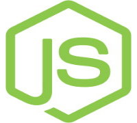
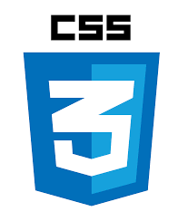
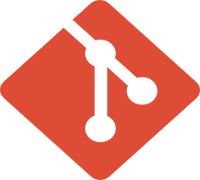

About
With three years entrenched in the world of full-stack web development, I've delved into the intricate realm of crafting digital experiences. My journey has been a fusion of creativity and logic, where I've seamlessly navigated through front-end interfaces and back-end functionalities. Designing captivating user interfaces is where I thrive, carefully weaving together HTML, CSS, and JavaScript to bring visions to life. Simultaneously, I've relished the challenges of server-side scripting, databases, and APIs, ensuring the seamless operation of applications. This amalgamation of technical expertise and creative flair has honed my skills, allowing me to create dynamic, user-centric solutions that transcend mere functionality, aiming for an immersive and intuitive user experience. Constantly evolving in this ever-changing landscape, I'm enthusiastic about the endless possibilities and eager to tackle new challenges head-on.
Skill Stack

Java

Javascript
ReactJS

NodeJS
Bootstrap

MySQL
Python

HTML

CSS

MongoDB

Tensorflow

Git
Additional Technical skills
- Programming / Mark-up Languages and frameworks: Java, Advanced Java, Python, Bash, Spring boot, MVC, Hibernate, Django, HTML5, CSS3, Webpack, SASS, LESS, NodeJS, ReactJS, Angular, React-Hooks, Redux, ExpressJS, Bootstrap, REST API, Angular JS, MERN Stack, XML, SFDL, Wicket.
- Databases and Tools: MySQL, PostgresSQL, MongoDB, Oracle Database, Microsoft SQL Server, PhpMyAdmin, SQLyog, Microsoft Azure SQL, AWS S3
- Tools and Cloud Technologies: Eclipse, VS Code, GitHub, Postman, Redmine, Docker, Swagger, Azure Cloud, JIRA, AWS, Microsoft Azure, MongoDB Atlas service, Selenium, Maven, Gradle , JFrog Artifactory, Sharepoint, Oauth 2.0 OIDC server
- Project Development and Design Patterns: : Microservices Architecture, Agile, Waterfall, Test Driven(TDD), Singleton, SCRUM.
- Machine learning algorithms: Regression, SVM, Decision Tree, Naive Bayes, KNN, Random Forest, Clustering Factory Method
- Data analysis: Predictive analysis for risk management, Machine learning & Visualization, Quantitative, Text, Statistical, Statistics
-
Certifications/ Training:
- Front-End Web Development with React by Coursera
- Server-side Development with NodeJS, Express and MongoDB by Coursera
- Become a Spring Developer learning path by LinkedIn Learning
- Microsoft Technology Associate
- Microsoft Azure DevOps
- Blackberry Bootcamp 2020
- NoSQL Databases ( IBM )
- Full-Stack Development with React Specialization
- Become a Test Automation Engineer